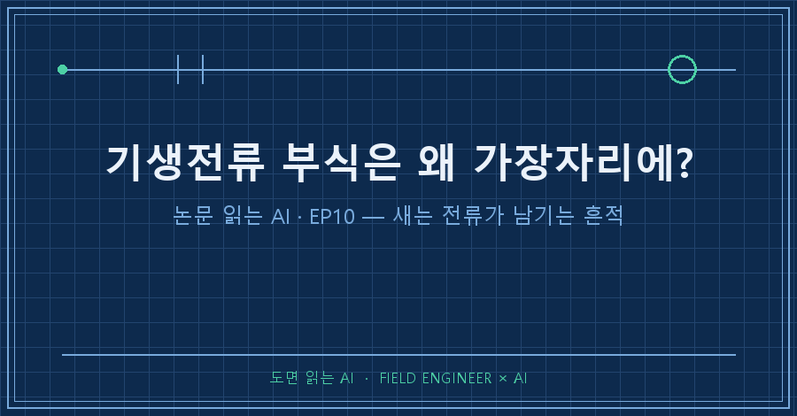
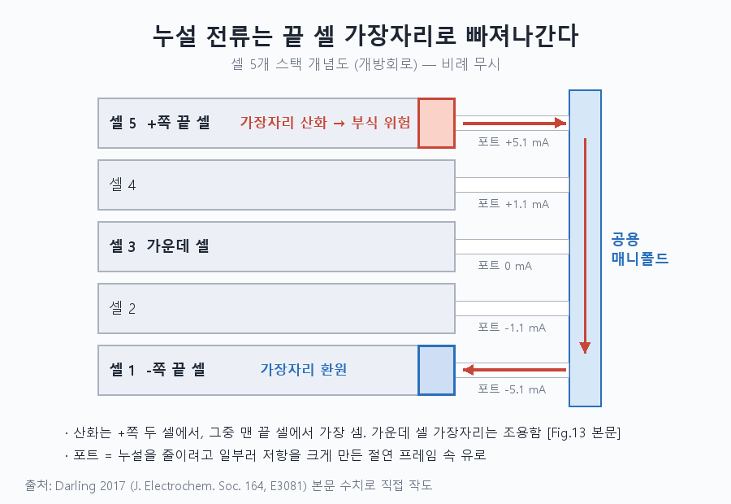
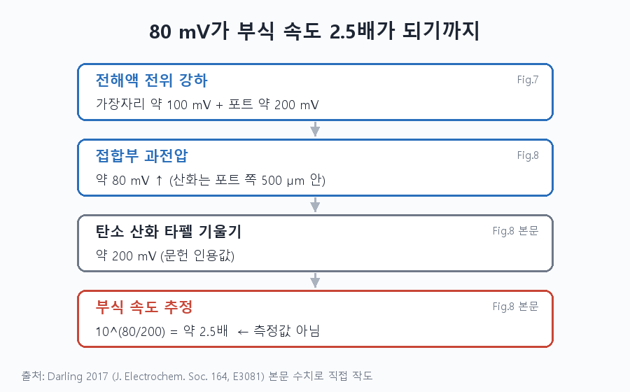
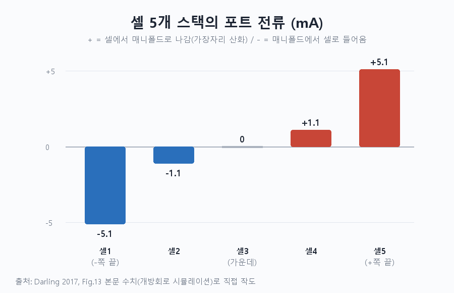
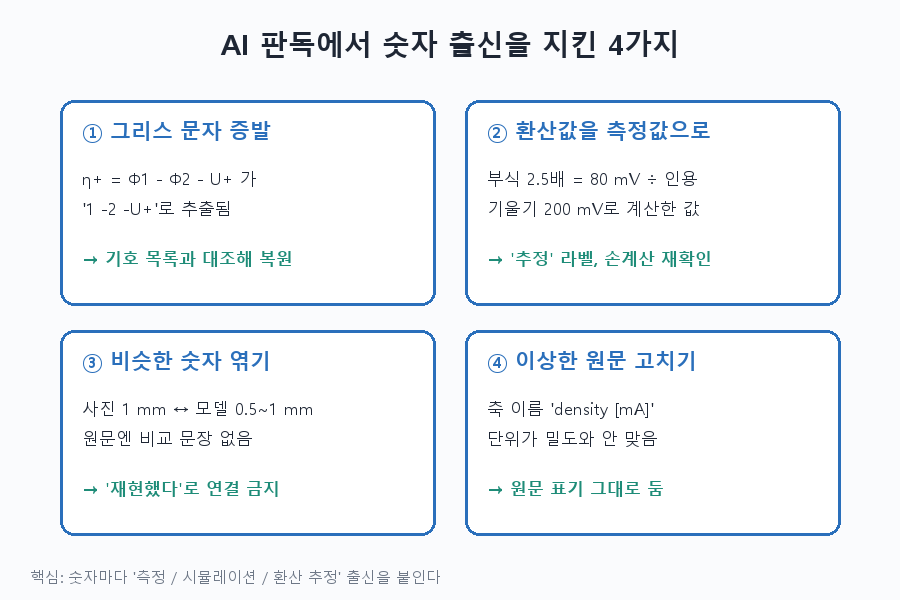

기생전류 부식은 스택 전체에 고르게 생기지 않습니다. 전위가 가장 높은 쪽 끝 셀의, 양극 가장자리에 몰려요. 공용 통로로 새어 나가는 전류가 전극 끝에 반응을 몰아주기 때문입니다 [Darling 2017, Fig.3·결론].
실제로 오래 충·방전한 바나듐 플로우 배터리를 분해해 보니, 절연 프레임과 맞닿은 가장자리에서 안쪽으로 약 1 mm가 변색돼 있었어요 [Darling 2017, Fig.2].
'논문 읽는 AI' 10편입니다. EP05~09는 기생전류가 넣은 전기를 새게 만든다는 이야기였죠. 이번엔 새는 전류가 지나간 자리에 흔적을 남긴다는 이야기예요.
읽은 논문은 미국 연구진이 2017년 Journal of The Electrochemical Society에 낸 오픈액세스 논문입니다(Darling 외, doi: 10.1149/2.0081711jes). 소재는 플로우 배터리지만, 저자들은 같은 구조를 가진 수전해·연료전지에서도 기생전류가 생긴다고 첫 문장부터 짚어요 [Darling 2017, Abstract].
1. 이 논문은 무엇을 풀려 했나요
"왜 하필 가장자리만 부식되는가"를 설명하고, 부식을 피하려면 누설 전류를 어디까지 허용할 수 있는지 계산하는 식을 만드는 것이 목표였어요 [Darling 2017, 서론·결론].
용어 셋만 먼저 잡고 갈게요.
- 기생전류(shunt current): 직렬로 쌓은 셀들이 전해액 공용 통로(매니폴드)로 이어져 있어서, 그 통로를 타고 셀 사이를 몰래 흐르는 전류.
- 포트(port): 전극 둘레 절연 프레임 속의 좁은 유로. 매니폴드에서 전극까지 전해액을 실어 나르고, 누설을 줄이려고 일부러 이온 저항을 크게 만든 길이에요 [Darling 2017, 서론].
- 과전압: 반응을 밀어붙이는 '추가 전압'. 클수록 반응이 빨라집니다.
논문 서론이 깔아 둔 출발점은 넷이에요 [Darling 2017, 서론].
1. 매니폴드는 셀과 셀 사이의 이온 합선 통로가 된다.
2. 이 전류는 저장한 에너지를 계속 갉아먹고, 부식·가스 발생 같은 부반응까지 일으킨다.
3. 유로를 길고 좁게 만들면 줄일 수 있지만 펌프 일이 늘고, 0으로 만들 수는 없다.
4. 기존 등가회로 모델은 전류의 크기는 잘 구하지만, 전극 끝에서 어떤 반응이 그 전류를 받아 주는지는 설명하지 못한다.
2. 어떻게 확인했나요
작은 스택을 정밀하게 시뮬레이션해서 현상을 보고, 큰 스택에도 쓸 수 있는 간단한 식을 따로 만들었어요 [Darling 2017, 서론·Analytical Model].
| 단계 | 내용 | 근거 |
|---|---|---|
| 수치 모델 | 유한요소 소프트웨어로 셀 2개를 정상상태 계산(요소 약 11.5만 개) | [Darling 2017, Numerical model] |
| 계산 조건 | 외부로 전류가 나가지 않는 개방회로, 25℃, 바나듐 전해액 | [Darling 2017, Table II] |
| 확장 | 음극 쪽 매니폴드 추가, 셀 5개로 확대 | [Darling 2017, Fig.12·13] |
| 해석 모델 | 반무한 전극 식으로 가장자리 과전압의 상한 계산 | [Darling 2017, Eq.20] |
부식 반응 자체는 모델에 넣지 않았다는 점이 중요해요. 대신 가장자리에 걸리는 과전압을 보고 부식이 일어나기 쉬운 정도를 판정합니다 [Darling 2017, Numerical model].

3. 기생전류 부식은 어디서, 얼마나 커지나요
+쪽 끝 셀의 양극 가장자리에서 과전압이 약 80 mV 높아지고, 이 때문에 탄소 부식 속도가 약 2.5배로 추정된다는 게 핵심 결과입니다 [Darling 2017, Fig.8].
- 전해액 전위가 전극 가장자리에서 약 100 mV, 포트를 지나며 다시 약 200 mV 떨어져요 [Darling 2017, Fig.7].
- 산화 반응은 포트에서 500 μm 안쪽에만 갇혀 일어납니다 [Darling 2017, Fig.8].
- 탄소 산화의 타펠 기울기(반응 속도를 10배 올리는 데 드는 전압)를 약 200 mV로 잡으면, 추가 80 mV는 부식 속도 약 2.5배에 해당해요 [Darling 2017, Fig.8 본문].
- 평소엔 무해한 바나듐 반응이 이 전류를 받아 줍니다. 그런데 완충전에 가까워 받아 줄 바나듐 이온이 바닥나면 탄소 부식·산소 발생이 대신 나설 수 있어요 [Darling 2017, Results].

셀 5개로 늘린 계산에서 포트 전류는 아래(−쪽)에서 위(+쪽)로 −5.1, −1.1, 0, 1.1, 5.1 mA였어요 [Darling 2017, Fig.13 본문]. 가운데 셀 가장자리는 나머지 부분과 구별되지 않을 만큼 조용했고, 산화는 +쪽 두 셀, 그중에서도 맨 끝 셀에서 가장 셌습니다.

조건을 바꿔 본 결과는 표로 정리할게요.
| 바꾼 조건 | 결과 | 근거 |
|---|---|---|
| 포트 저항 ↓ | 가장자리 과전압 ↑ | [Darling 2017, Fig.9] |
| 충전 상태(SOC) ↑ (20→99%) | 과전압 ↑, 국부 부식 위험 크게 ↑ | [Darling 2017, Fig.9] |
| 전극 길이 10배 (2 mm→2 cm) | 포트 전류 3.54→3.61 mA(2% 미만), 산화 구간 0.5→1 mm | [Darling 2017, Fig.10] |
| 음극 매니폴드 추가 | 포트 전류 3.5 mA에서 6% 감소 → 양·음극 쪽 영향은 약하게만 얽힘 | [Darling 2017, Fig.12 본문] |
| 충전 중 | 스택 전압이 높아 포트 전류·가장자리 과전압 ↑ | [Darling 2017, Analytical Model] |
| 전극을 얇게 | 포트 전류 밀도가 커져 부식에 취약(얇은 카본 페이퍼는 반응 면적이 커서 일부 상쇄) | [Darling 2017, Analytical Model] |
반직관적인 대목이 하나 있어요. 식만 보면 전해액 전도도를 높이면 과전압이 줄 것 같지만, 저자들은 이걸 틀린 결론이라고 못 박습니다. 전도도가 오르면 포트·매니폴드 저항이 낮아져 누설 전류 자체가 커지고, 그 영향이 더 크다는 거예요 [Darling 2017, Analytical Model].
설계 쪽 제안은 두 가지입니다 [Darling 2017, Analytical Model·결론].
- 포트를 빠져나온 전해액이 처음 닿는 전도성 표면은 반응 면적이 넓고 본 반응에 활성이 높아야 한다.
- 등가회로로 포트 전류를 구하고 해석식으로 가장자리 과전압 상한을 계산한다. 거꾸로 목표 수명에서 허용 최대 포트 전류를 정해 포트·매니폴드 저항을 설계한다.
4. 이 결과를 어디까지 믿어야 하나요
부식의 '경향'을 보여 준 연구이지 부식 '속도'를 잰 연구는 아닙니다. 한계는 이래요.
- 개방회로만 계산: 부하가 걸린 상태로의 확장은 "간단할 것(straightforward)"이라고만 했고 계산은 하지 않았어요 [Darling 2017, 서론].
- 2.5배는 환산값: 문헌의 타펠 기울기로 바꾼 추정이고, 부식을 직접 측정한 값이 아니에요 [Darling 2017, Fig.8 본문].
- 해석식은 상한: 1차원 가정이라 수치 모델보다 늘 크게 나와요. 보수적으로 판정하는 용도입니다 [Darling 2017, Fig.14 본문].
- 바나듐 전지 기준: 모든 계산값은 바나듐 플로우 배터리 것이고, 다른 장치로의 적용은 저자들의 견해예요 [Darling 2017, 서론].
- 실험 증거는 분해 사진: 사진 속 변색 폭(약 1 mm)과 모델의 산화 구간(0.5~1 mm)이 비슷해 보이지만, 논문은 둘을 수치로 맞대 비교하지 않았어요.
5. AI에게 읽힐 때 숫자의 "출신"부터 물은 이유
이번 논문의 승부처는 숫자의 '출신'을 섞지 않는 것이었어요. 측정값, 시뮬레이션값, 남의 책 숫자로 환산한 추정값이 한 문단에 같이 나오거든요.

그리스 문자가 빠진다. PDF에서 텍스트를 뽑으니 과전압 정의 η₊ = Φ₁ − Φ₂ − U₊ 가 이렇게 나왔어요.
η+ = 1 −2 −U+Φ가 사라져 '1 빼기 2'처럼 읽힙니다. 논문 끝 기호 목록(List of Symbols)에서 아래첨자 1=고체, 2=전해액임을 확인하고 복원했어요.
환산값을 측정값처럼 옮긴다. "부식 2.5배"는 80 mV와 다른 책에서 인용한 기울기 200 mV로 계산한 값이에요. 10^(80/200) ≈ 2.5 를 손으로 다시 계산해 맞는지 확인했고, 본문에도 '추정'이라고 붙였습니다.
비슷한 숫자를 '일치'로 엮는다. 사진의 1 mm와 모델의 0.5~1 mm는 "모델이 실험을 재현했다"로 묶고 싶어지는 자리예요. 원문에 그런 문장이 없어서 연결하지 않았어요.
이상한 원문을 조용히 고친다. Fig.14 가로축 이름은 "Port current density [mA]"입니다. 밀도라면서 단위가 mA죠. 이걸 mA/cm²로 '고쳐' 옮기면 원문과 달라져요. 그대로 두고 표시만 했습니다.
여러분은 AI가 요약해 준 숫자가 측정인지 계산인지 확인해 보신 적 있나요? 네 함정을 잡은 질문은 이렇습니다. 자기 분야 논문에도 그대로 붙여 쓸 수 있어요.
1) 수치마다 [측정 / 시뮬레이션 / 인용값으로 환산한 추정] 중 하나로 분류하고, 근거 문장을 인용해.
2) 깨지거나 빠진 기호가 있는 수식을 표시하고, 기호 목록과 대조해 복원해.
3) 논문이 '일치한다'고 직접 쓰지 않은 비교는 연결하지 마.
4) 단위·축 이름이 이상해 보여도 고치지 말고 원문 표기 그대로 둬.
5) 계산 조건(개방회로·온도·셀 수)을 먼저 뽑고, 결론이 그 조건 밖으로 넓혀졌는지 점검해.6. 자주 묻는 질문
Q. 기생전류 부식은 왜 가운데 셀에서는 잘 안 생기나요?
포트 전류가 스택 양 끝에서 가장 크고 가운데는 거의 0이기 때문이에요. 셀 5개 계산에서 가운데 셀 포트 전류는 0 mA, 양 끝은 ±5.1 mA였습니다 [Darling 2017, Fig.13 본문].
Q. 충전 중과 방전 중 언제 더 위험한가요?
충전 중이에요. 스택 전압이 높아 포트 전류가 커지기 때문입니다 [Darling 2017, Analytical Model]. 충전 상태(SOC)가 높을수록 위험이 커진다는 계산도 함께 나와요 [Darling 2017, Fig.9].
Q. 이 숫자를 수전해에 그대로 써도 되나요?
숫자는 안 됩니다. 계산은 전부 바나듐 플로우 배터리 값이에요 [Darling 2017, 서론]. 옮겨 쓸 수 있는 건 '끝 셀 가장자리를 먼저 의심하라'는 관점입니다.
---
정리하면, 새는 전류는 효율만 깎는 게 아니라 끝 셀 가장자리에 부식을 몰아넣습니다. 그래서 포트 저항은 효율 문제이면서 수명 문제예요.
다음 편부터는 2부로 넘어가요. 전류가 아니라 수소와 산소가 막을 넘어 섞이는 크로스오버 이야기입니다.
논문 PDF를 AI에게 맡길 때 쓰는 점검 질문들은 makefield.ai에서 계속 다듬고 있어요.